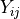
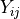

5. Mathematical Reference¶
This page describes the mathematical operations behind the Slice and Cut operations of MSlice
In general, MSlice handles “reduced” (processed) inelastic neutron scattering data which has been binned (histogrammed) in energy transfer for each detector / position-sensitive-detector (PSD) element. We will use the terminology of the Horace program and refer to these energy-detector-element bins as “pixels”.
Since the detector elements are in the laboratory coordinates, but we often want to plot the data in reciprocal space, a coordinate transformation is needed. This means that the input and output binning grids of the data will not be axis aligned, and will instead look something like this:
{kind=link}
Where the square red grid represents the target (output) bins, and the slanted green grids (parallelograms) represents the original bins (“pixels”). As discussed in the PSD and non-PSD modes section, MSlice makes a distinction between PSD (fine green grid) and non-PSD (coarser green grid) data.
A Slice refers to a rebin into a two dimensional output, whilst a Cut is a rebin _or_
integration into a one dimensional output.
For each type of data (PSD and non-PSD) we will describe each operation in turn.
5.1. PSD Slice¶
For PSD data, MSlice uses centre-point rebinning, treating each input bin (“pixel”) as a
point and summing the full signal of each pixel whose centres lie within an output bin
(illustrated in the image by the darker green shading in top left, with dots marking centres).
Thus the output signal in the  th bin, , is:
th bin, , is:
where is the input signal in the input th bin
and the sum runs over the number of bins whose centres lie within the
boundaries of the th output bin.
The above expression uses the NumEventsNormalization convention of Mantid which is the
same as that adopted by the Horace program.
The error values are considered to be standard deviations and are summed in quadrature.
5.2. PSD Cut¶
Since MSlice allows users to specify bins in the non-integrating direction which are not
necessarily aligned with respect to the original data, a rebinning step as described above
is needed for the Cut operation too.
This leads to the two types of behaviour (“algorithms”) for the Cut operation described
in the Cutting Algorithms section:
The default
Rebinmethod just uses the rebinning described above with one axis having only a single bin.The
Integrationmethod first rebins the data as described above with the integration axis divided into 100 bins. It then calls the relevant Mantid algorithm (IntegrateMDHistoWorkspace) to integrate (sums the signal) in those 100 bins.
Taking the  index to be over the integration axis, the integrated
index to be over the integration axis, the integrated Cut signal
 is then given by:
is then given by:
where the index only runs over regions with data , and the width
where is the width in the
th direction of the th bin.
Note that the equivalent expression for a Rebin cut is simply:
where now the index runs over the full integration range  .
The difference is thus a coordinate-dependent weighting factor
.
The difference is thus a coordinate-dependent weighting factor  .
If the integration range does not include regions without data (e.g. )
then all the will be equal to the full integration width and the difference between
and is a constant.
.
If the integration range does not include regions without data (e.g. )
then all the will be equal to the full integration width and the difference between
and is a constant.
However, if the integration range covers region with no data (e.g. beyond the kinematic limits) then the two cuts may look very different because will weight regions with data more heavily than regions without data.
5.3. Non-PSD Slice¶
For non-PSD data, MSlice uses fractional rebinning, where it first calculates the overlap area between the input and output bins, and then sums only the fraction of the signal of the input bins which overlaps the output bin.
The output signal is computed as:
and the output uncertainty as:
where is the fractional overlap of the input th bin with
the output th bin.
This is illustrated in the figure at the start of the page by the square on the right hand side with blue triangular and orange quadrilateral shaded regions. The blue and orange shading illustrates the fractional overlap areas which weights the signal in the top left and top right input bins (large parallelograms) respectively.
5.4. Non-PSD Cuts¶
Like for PSD data, there are two Cut “algorithms” for non-PSD data also.
The Rebin cut algorithm performs the same operation described in the previous section
but with a single bin in the integration axis, yielding
where , and indicates the full integration range.
In order to support rebinning in the non-integration axis, the Integration algorithm
first rebins the data into the desired bins in the non-integration axis,
and 100 bins in the integration axis and then sums them as:
where is the number of bins at a given
 with non-zero fraction (e.g. if the integration contains only regions with data
then = 100, otherwise will be less),
and is the width along the th axis of the th bin.
The normalisation is needed because in the limiting case where all the fractions
with non-zero fraction (e.g. if the integration contains only regions with data
then = 100, otherwise will be less),
and is the width along the th axis of the th bin.
The normalisation is needed because in the limiting case where all the fractions
 are unity, the denominator would be , so we recover the usual
expression for integrating over a distribution.
Note that as previously, indicates the region within the integration
range with data (in this case equivalent to regions with non-zero fractions).
are unity, the denominator would be , so we recover the usual
expression for integrating over a distribution.
Note that as previously, indicates the region within the integration
range with data (in this case equivalent to regions with non-zero fractions).
Like with the PSD case there is thus an dependent scaling factor
(assuming all the bins have the same width) between Cuts computed using the Rebin or
Integration algorithm.
This scaling factor is a constant if the integration range includes only regions with data
(e.g. ), but will not be constant if the integration
overlaps regions without data.
The difference is illustrated below:

The cuts have been normalised to the peak intensity so that the constant scaling factor between
the two algorithms factorises out.
In the top cut, integrating over there are no regions
without data so the two cuts are equivalent except for a constant scaling factor.
In the bottom cut, integrating over there is a large
region with no data, so now cuts from the two techniques differ markedly.
At meV Where the data covers the full integration range, we have = 100
and the two cuts are equivalent.
As  increases, decreases until at around 20 meV, it is = 50,
and we see that at that point the (normalised)
increases, decreases until at around 20 meV, it is = 50,
and we see that at that point the (normalised) Integration cut is half the intensity of
the (normalised) Rebin cut.
5.5. A note on units¶
One advantage of inelastic neutron scattering over other techniques is that it is (relatively) easy to normalise the measured data to absolute units. At the ISIS Neutron and Muon Source if this normalisation is done, then the signal will be in units of [milibarns per steradian per meV per formula unit] or [mb/sr/meV/f.u.].
An Integration over energy would then yield a differential cross-section in [mb/sr/f.u.],
whereas a Rebin over energy would leave the units unchanged at [mb/sr/meV/f.u.].
However, an Integration over  instead of energy will yield units of
[mb/Å/sr/meV/f.u.] rather [mb/meV/f.u.] and as such it may be more useful to perform an
average
instead of energy will yield units of
[mb/Å/sr/meV/f.u.] rather [mb/meV/f.u.] and as such it may be more useful to perform an
average Rebin which will leave the units unchanged.
Unfortunately, the input files read by MSlice do not indicate if the signal values saved are in absolute units or not, so MSlice cannot automatically display the correct units on plots - this is left to the user.
5.6. A note on the regions of validity of the two algorithms¶
As can be seen in the example above, the Integration cut algorithm will produce low signals
where there is less data, whereas the Rebin cut algorithm will amplify the signals in such
regions. In effect, it assumes that the signal is constant across the integration range and
can be extrapolated over regions without data (so the only manifestation of the lack of data
are larger errorbars associated with these bins).
This assumption may be valid for density-of-states (DOS) type cuts where one would expect
that the signal is approximately constant over and only varies in energy.
Thus for these applications, it may be suitable to chose the Rebin algorithm, and to
extrapolate the high-energy, high- regions which are kinematically inaccessible.
Conversely, for integration over energy - for example over the elastic line to compute a
differential cross-section or over a finite energy crystal field excitation to obtain a
magnetic cross-section, the Integration algorithm should be chosen else the signal
in the cut will vary with the integration range and would not be a cross-section.